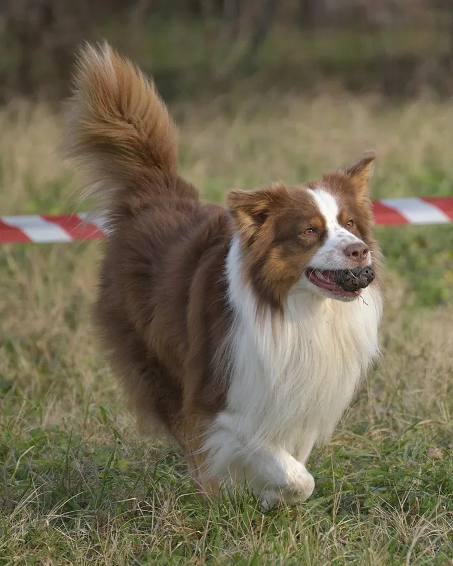
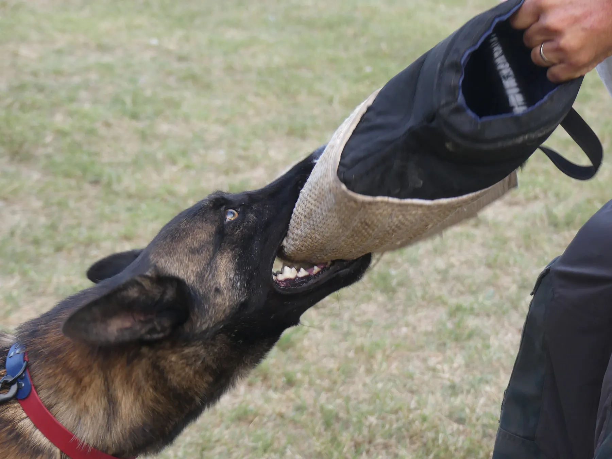

Consigli per vivere meglio con il tuo cane
Guide pratiche su educazione, comportamento e sport cinofili, scritte con il nostro metodo: motivazione, rispetto e zero coercizione.
 Cuccioli
CuccioliCucciolo che morde: cosa fare e cosa evitare
Il cucciolo morde mani, vestiti e mobili? È normale, ma si può guidare. Ecco cosa fare, cosa evitare e quando chiedere aiuto a un educatore.
Leggi l'articolo Cuccioli
CuccioliPuppy training: quando iniziare e cosa si fa
Quando iniziare il puppy training, cosa si impara nelle prime lezioni e come scegliere un percorso rispettoso per il tuo cucciolo a Piacenza.
Leggi l'articolo Educazione di base
Educazione di baseCane che tira al guinzaglio: come cambiare
Perché il cane tira al guinzaglio e come insegnargli a camminare al tuo fianco senza strattoni, con metodi gentili e un po' di allenamento costante.
Leggi l'articolo Educazione di base
Educazione di baseIl richiamo non funziona? Come costruirlo davvero
Il cane non torna quando lo chiami? Ecco perché succede e come costruire un richiamo affidabile con gioco, premi e distrazioni graduali.
Leggi l'articolo Supporto specifico
Supporto specificoCane reattivo: cosa fare se abbaia agli altri
Il cane abbaia, tira o si agita quando vede altri cani? Cos'è la reattività, perché succede e come lavorarci con gradualità e rispetto.
Leggi l'articolo Metodo
MetodoCollari a strangolo ed elettrici: perché no
Cosa sono i collari a strangolo, a punte ed elettrici, quali rischi comportano e quali alternative gentili esistono per educare il cane.
Leggi l'articolo Metodo
MetodoEducazione senza coercizione: cosa significa
Cosa vuol dire davvero educare un cane senza coercizione: principi, esempi pratici e perché funziona anche con i cani più difficili.
Leggi l'articolo Sport cinofili
Sport cinofiliObedience: cos'è e come iniziare
Cos'è l'obedience cinofila, quali esercizi prevede, quali cani possono praticarla e come iniziare con un percorso rispettoso e divertente.
Leggi l'articolo
Sport cinofiliRicerca tartufi con il cane: come funziona
Cos'è la ricerca tartufi sportiva, quali cani possono praticarla, come si addestra il fiuto e come iniziare con un percorso gentile.
Leggi l'articolo Brevetti
BrevettiBrevetti CAE-1 e BH: differenze e come prepararsi
Brevetto CAE-1 e brevetto BH (Begleithund): cosa sono, in cosa si differenziano e come prepararsi alla prova con un percorso rispettoso.
Leggi l'articolo
Sport cinofiliMorso sportivo senza coercizione: miti e verità
Il morso sportivo rende il cane aggressivo? Miti e verità sul lavoro di morso e su come praticarlo in modo rispettoso, con motivazione e autocontrollo.
Leggi l'articolo Consigli
ConsigliCome scegliere un educatore cinofilo a Piacenza
Come scegliere un educatore cinofilo a Piacenza: qualifiche, metodo, domande da fare e segnali d'allarme per affidare bene il tuo cane.
Leggi l'articoloNon trovi la tua situazione?
Raccontaci il tuo cane: ti aiutiamo a capire da dove iniziare.